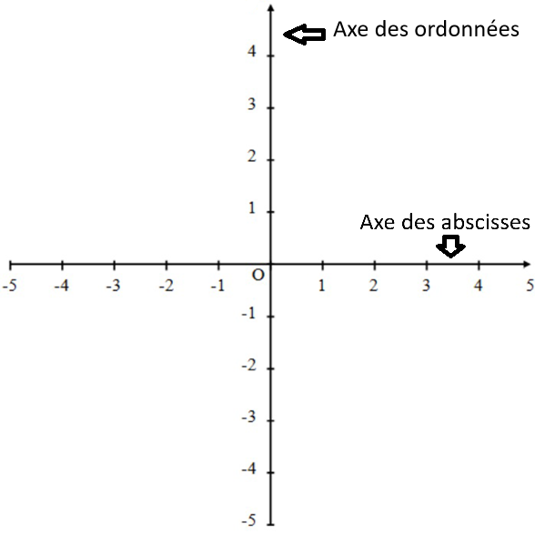

Un nombre relatif est un nombre qui peut être positif ou négatif.
• Les nombres positifs sont précédés du signe + (que l'on peut ne pas écrire).
• Les nombres négatifs sont précédés du signe − (que l'on doit toujours écrire).
• l'ensemble des nombres positifs et négatifs s'appelle l'ensemble des nombres relatifs.
Exemples :
• +7 ou 7 est un nombre relatif positif
• −3 est un nombre relatif négatif
• +5,2 ou 5,2 est un nombre relatif positif
• −12,8 est un nombre relatif négatif
• 0 est le seul nombre qui est à la fois positif et négatif.
Distance à zéro
Définition :
La distance à zéro d'un nombre relatif est la distance entre ce nombre et 0 sur une droite graduée. C'est donc le nombre sans son signe.
Exemples :
• La distance à zéro de +5 est 5
• La distance à zéro de −7 est 7
• La distance à zéro de −3,5 est 3,5
Nombres opposés
Définition :
Deux nombres relatifs sont opposés s'ils ont la même distance à zéro mais des signes différents.
L'opposé d'un nombre relatif a se note −a.
Exemples :
• +7 et −7 sont deux nombres opposés
• L'opposé de +5,2 est −5,2
• L'opposé de −3 est +3 (ou 3)
• L'opposé de 0 est 0
Propriété : Deux nombres opposés sont situés à égale distance de 0 sur une droite graduée, de part et d'autre de 0.
Remarque : Les nombres que nous connaissions avant (0 ; 1 ; 2 ; 3 ; ...) s'appellent les nombres entiers naturels. L'ensemble des nombres relatifs contient tous les nombres entiers naturels et leurs opposés.
Repérage sur une droite graduée
Droite graduée
Définition :
Une droite graduée est une droite sur laquelle on a choisi :
• une origine (le point de repère, généralement 0),
• un sens (indiqué par une flèche),
• une unité de longueur .
Définition :
Sur une droite graduée, chaque point est repéré par un nombre appelé son abscisse.
On dit que l'on a repéré le point sur la droite.
Exemple :
Sur cette droite graduée, le point A a pour abscisse −2 et le point B a pour abscisse +2.
On note A(−2) et B(+2).
Remarque : Les nombres négatifs sont situés à gauche de 0 et les nombres positifs sont situés à droite de 0 sur une droite graduée horizontale orientée de gauche à droite.
Comparaison de nombres relatifs
Règle générale
Propriété : Sur une droite graduée horizontale orientée de gauche à droite :
• Un nombre est plus petit qu'un autre s'il est situé à gauche de cet autre.
• Un nombre est plus grand qu'un autre s'il est situé à droite de cet autre.
Exemple :
Sur la droite graduée ci-dessus : −2 < +2 car −2 est à gauche de +2.
Comparaison de nombres de signes différents
Propriété : Un nombre négatif est toujours plus petit qu'un nombre positif.
Exemples :
• −5 < +3
• −100 < 1
• −0,5 < 0,2
Comparaison de nombres positifs
Propriété : Pour comparer deux nombres positifs, on compare leurs distances à zéro :
Le plus grand nombre positif est celui qui a la plus grande distance à zéro.
Exemples :
• 7 > 3 car 7 est plus loin de 0 que 3
• 12,5 > 8,9 car 12,5 est plus loin de 0 que 8,9
Comparaison de nombres négatifs
Propriété : Pour comparer deux nombres négatifs, on compare leurs distances à zéro :
Le plus grand nombre négatif est celui qui a la plus petite distance à zéro.
Exemples :
• −3 > −7 car 3 < 7 (la distance à zéro de −3 est plus petite)
• −2,5 > −8,1 car 2,5 < 8,1
• −0,5 > −1 car 0,5 < 1
Méthode : Pour comparer deux nombres négatifs :
1. On compare leurs distances à zéro (sans le signe −)
2. Le plus grand nombre négatif est celui dont la distance à zéro est la plus petite
3. On inverse donc la comparaison des distances à zéro
Repérage dans le plan
Repère du plan
Définition :
Un repère du plan est constitué de deux droites graduées (souvent perpendiculaires) de même origine.
• La droite horizontale s'appelle l'axe des abscisses.
• La droite verticale s'appelle l'axe des ordonnées.
Exemple :

Coordonnées d'un point
Définition :
Dans un repère, chaque point M est repéré par deux nombres appelés ses coordonnées :
• Le premier nombre est l'abscisse du point (on lit sur l'axe horizontal).
• Le deuxième nombre est l'ordonnée du point (on lit sur l'axe vertical).
On note : M(abscisse ; ordonnée)
Méthode : Pour placer un point M(x ; y) dans un repère :
1. On repère l'abscisse x sur l'axe horizontal
2. On repère l'ordonnée y sur l'axe vertical
3. On trace des lignes perpendiculaires aux axes passant par ces points
4. Le point M est situé à l'intersection de ces deux lignes
Exemples :
• Le point A a pour coordonnées (1 ; 1)
• Le point B a pour coordonnées (2 ; -1)
• Le point C a pour coordonnées (-3 ; 2)
Remarque : L'ordre des coordonnées est important : Un point M(2 ; −1) n'est pas le même qu'un point N(−1 ; 2).